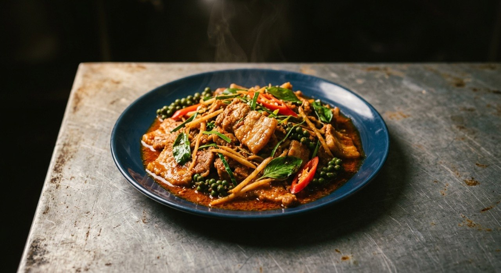

Pork fried with red curry paste, then buried in fingerroot, kaffir leaves and green peppercorns — pad krapow's wilder cousin.

ผัดเผ็ด is a template, not one dish: the name just means "stir-fried spicy", and the sources apply it to sliced pork, crispy catfish, and braised pig's trotter alike. What stays constant is the herb cast — fingerroot (กระชาย), kaffir lime leaves, green peppercorns (พริกไทยอ่อน), holy basil, and sliced fresh chilli. Kapook's guide to the family puts it plainly: these are stir-fries where the herbs are the point, "เผ็ดร้อนเค็มนำนิด" — hot and salty with just a touch of sweet.
The structure is the same in every source: fry the curry paste in oil until the oil turns red and fragrant, season, then herbs in last, wilted only — never cooked down. Toncooking's Cookpad version times it to five or six basil leaves and three sprigs of green peppercorns, tossed at the end. That's the dish's whole trick: the herbs stay bright because they barely meet the heat.
From there the schools split. Kapook's catfish version is the jungle original — catfish fried crisp, 300 grams of fingerroot, no coconut at all, and holy basil in two forms: fried crisp for the garnish, fresh for the toss. The pork versions soften it with a spoon or two of coconut milk — Wongnai's trotter recipe uses 100 grams "for the richness". And Aroifin's catfish version runs wet, the paste dissolved in 300 ml of water into a sauce rather than a dry fry. All of them are pad phet; only the texture changes.
| Thai | English | Amount |
|---|---|---|
| หมูเนื้อหั่นชิ้น | Pork, sliced | 1 cup |
| พริกแกงเผ็ด | Red curry paste | 1 tbsp |
| กระชายซอย | Fingerroot, sliced | 2 tbsp |
| ใบมะกรูดซอย | Kaffir lime leaves, sliced | 2 tbsp |
| พริกไทยสด | Green peppercorns | 3 sprigs |
| พริกสด | Fresh chilli, sliced | 2 tbsp |
| ใบโหระพา | Holy basil leaves | 5–6 |
| กะทิ | Coconut milk | 2 tbsp |
| น้ำปลา / น้ำตาล | Fish sauce / sugar | 2 tbsp / 2 tsp |
| น้ำมันพืช | Vegetable oil | 2 tbsp |
The jungle original (Kapook): 500 g catfish fried crisp, 100 g curry paste, 300 g fingerroot, 4–5 spur chillies, 7–8 kaffir leaves, 3–4 green peppercorn sprigs, 2–3 tbsp palm sugar, crisp-fried + fresh basil. Wongnai's trotter version: braised trotter, 100 g coconut milk, 10 kaffir leaves, 2–3 tbsp curry paste, its own braising water as the liquid.
Coconut or not. The pork schools add coconut milk — 2 tbsp (Cookpad) to 100 g (Wongnai) — while the catfish versions (Kapook, Aroifin) use none. The dry, no-coconut version is the jungle original; the enriched version is the city adaptation.
Dry fry or wet sauce. Aroifin dissolves the paste in 300 ml of water and simmers the fish — a sauced dish. Everyone else fries the paste dry in oil. Same name, different texture.
How much fingerroot. Kapook's catfish version wants 300 g — more fingerroot than fish. The pork versions use 2 tablespoons. The herb-to-protein ratio flips by version: the catfish fry exists to carry herbs.
Basil: crisp or fresh. Kapook fries half the basil crisp for the garnish and tosses the rest fresh. Every other source uses fresh leaves only. The crisp basil is the special-occasion presentation.
What meat. Pork (Cookpad), catfish (Kapook, Aroifin), pig's trotter (Wongnai). It's a template — the herb cast stays, the protein swaps.
This recipe is translated from the following Thai-language sources. Where they disagree, we've said so.
1. Cookpad — "ผัดเผ็ดหมู" by Toncooking (the pork recipe used here) — cookpad.com
2. Kapook — "ผัดเผ็ดปลาดุกทอดกรอบ อร่อยแซ่บกรุ่นกลิ่นกะเพรา" (the jungle original: crisp catfish, 300 g fingerroot, double basil) — cooking.kapook.com
3. Kapook — "17 เมนูผัดเผ็ด อร่อยรสแซ่บสไตล์ไทย" (the family overview and its herb cast) — cooking.kapook.com
4. Wongnai — "ผัดเผ็ดขาหมู" by ImAiw (trotter version with coconut milk) — wongnai.com
5. Aroifin — "วิธีทำ ผัดเผ็ดปลาดุก สูตรเข้มข้น" (the wet-school version) — aroifin.com